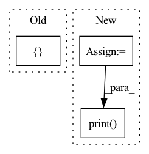

Pattern ID :30266

Before Change
status_icon = "⚪"
add_row(
[
f"{status_icon} {route.pod}",
f"{route.start_time.ToMilliseconds() - routes[0].start_time.ToMilliseconds()}ms",
fill(
"".join(route.status.exception.stacks[-stack_limit:]),
width=50,
break_long_words=False,
replace_whitespace=False,
),
]
)
After Change
from rich.table import Table
from rich import box
table = Table(box=box.SIMPLE)
for v in ("Pod", "Time", "Exception"):
table.add_column(v)
for route in routes:
status_icon = "🟢"
if route.status.code == jina_pb2.StatusProto.ERROR:
status_icon = "🔴"
elif route.status.code == jina_pb2.StatusProto.ERROR_CHAINED:
status_icon = "⚪"
table.add_row(
f"{status_icon} {route.pod}",
f"{route.start_time.ToMilliseconds() - routes[0].start_time.ToMilliseconds()}ms",
"".join(route.status.exception.stacks[-stack_limit:]),
)
from rich.console import Console
console = Console()
console.print(table)
def _safe_callback(func: Callable, continue_on_error: bool, logger) -> Callable:
@wraps(func)
In pattern: SUPERPATTERN
Frequency: 3
Non-data size: 3
Instances
Fragment ID: 89731745
Project Name: jina-ai/jina
Commit Name: 29cb11626dea0b458ff0377ad079b1340f467209
Time: 2021-11-15
Author: artex.xh@gmail.com
File Name: jina/clients/helper.py
M Class Name: AnonimousClass
N Class Name: AnonimousClass
M Method Name: pprint_routes(2)
N Method Name: pprint_routes(2)
M Parent Class:
N Parent Class:
M File Name: jina/clients/helper.py
N File Name: jina/clients/helper.py
M Start Line: 24
M End Line: 53
N Start Line: 25
N End Line: 45
'>
Before Change
"template."
)
CopierApp.run(
["copier", "gh:zenml-io/zenml-project-templates", str(path)],
exit=False,
)
After Change
from rich.markdown import Markdown
prompt_message = Markdown(
//// 🧑🏫 Project template parameters
)
console.print(prompt_message, width=80)
with Worker(
src_path="gh:zenml-io/zenml-project-templates",
dst_path=path,
'>
Fragment ID: 89731744
Project Name: maiot-io/zenml
Commit Name: f76495fc9fb8d0062230aa7f9a5e0709112a9d43
Time: 2023-02-08
Author: stefan@zenml.io
File Name: src/zenml/cli/base.py
M Class Name: AnonimousClass
N Class Name: AnonimousClass
M Method Name: init(3)
N Method Name: init(2)
M Parent Class:
N Parent Class:
M File Name: src/zenml/cli/base.py
N File Name: src/zenml/cli/base.py
M Start Line: 70
M End Line: 91
N Start Line: 82
N End Line: 165
'>
Before Change
avg_loss = (total_loss / total_samples)
tracker.log({f"{phase} {loss_type}": avg_loss})
def report_cosine_sims(diffusion_prior, dataloader, text_conditioned, device):
diffusion_prior.eval()
After Change
avg_loss = total_loss / total_samples
stats = {f"{phase}/{loss_type}": avg_loss}
trainer.print(stats)
if exists(tracker):
tracker.log(stats, step=trainer.step.item() + 1)
'>
Fragment ID: 89731747
Project Name: lucidrains/dalle2-pytorch
Commit Name: fe19b508ca57dfddd2743e955970b0392d177e88
Time: 2022-06-19
Author: 51308183+nousr@users.noreply.github.com
File Name: train_diffusion_prior.py
M Class Name: AnonimousClass
N Class Name: AnonimousClass
M Method Name: eval_model(7)
N Method Name: eval_model(6)
M Parent Class:
N Parent Class:
M File Name: train_diffusion_prior.py
N File Name: train_diffusion_prior.py
M Start Line: 32
M End Line: 58
N Start Line: 67
N End Line: 112